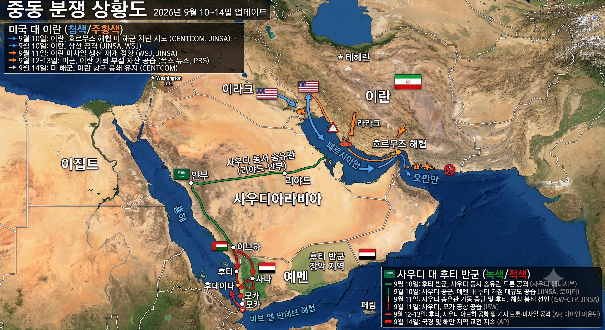
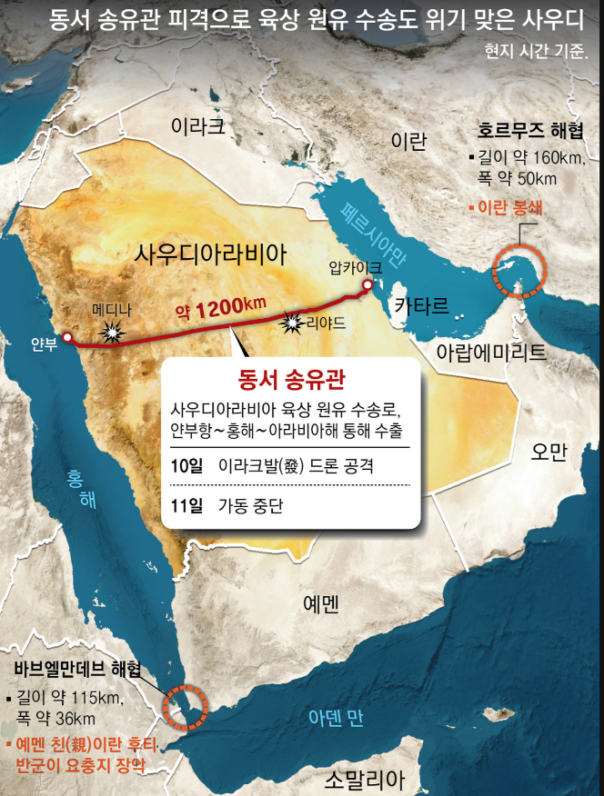

핵심 지정학적 안보 및 공급망 위기 지표
이란의 호르무즈 차단 시도와 후티 반군의 사우디 육상 송유관 피격 및 바브엘만데브 장악 복합 사태
호르무즈 해협 위협
이란 해군의 상선 공격 및 기뢰 부설 시도로 봉쇄 위기 고조. 미 해군의 항구 봉쇄 유지 및 군사적 차단 저지 작전 대치.
사우디 동서 송유관 피격
이라크발 드론 및 후티 반군 합동 피격으로 10일 타격 발생, 11일 전면 가동 중단(압카이크-리야드-메디나-얀부항).
바브엘만데브 해협 봉쇄
예멘 친이란 후티 반군이 해안 요충지 장악 및 해상 봉쇄 선언. 모카·후데이다 중심 홍해 남단 상선 진입 차단.
원유 수송로 복합 포위
동서 송유관을 통한 홍해 우회 수출이 불가능해진 상태에서 2대 해협 동시 봉쇄로 사우디 등 중동 산유국 원유 출하 불능.
중동 분쟁 종합 상황도 (2026.09.10~14)
미국-이란 대치선 및 사우디-후티 반군 교전 전선 종합 배치도

사우디 동서 송유관 피격 및 해협 봉쇄
호르무즈 봉쇄 우회로(동서 1,200km 파이프라인) 차단 상세도

중동 분쟁 종합 상황도 (2026년 9월 10~14일 업데이트)
출처: CENTCOM, JINSA, WSJ, ISW, AP, 포스뉴스, 로이터 종합
동서 송유관 피격으로 육상 원유 수송도 위기 맞은 사우디
사우디아라비아 육상 수송망 압카이크-얀부항 단절 및 해협 봉쇄 분석
일자별 전황 전개 및 교전 타임라인 (2026.09.10 ~ 09.14)
공식 발표 및 군사 씽크탱크(CENTCOM, ISW-CTP, JINSA) 집계 데이터
| 일자 | 미국 대 이란 전선 (페르시아만 / 호르무즈 해협) | 사우디 대 후티 반군 전선 (홍해 / 동서 송유관) |
|---|---|---|
| 9월 10일 |
이란, 호르무즈 해협 미 해군 차단 시도 및 상선 공격
이란 해군 고속정 및 해안 포대 자산 기동. CENTCOM과 JINSA, WSJ 긴급 타진. |
후티 반군, 사우디 동서 송유관 드론 공격 & 사우디 대규모 공습
사우디 핵심 동서 송유관 피격 타격 발생. 사우디 공군 예멘 내 후티 거점 즉각 보복 폭격 실시(로이터). |
| 9월 11일 |
이란 미사일 생산 재개 정황 식별
이란 탄도미사일 제조 기지 가동 포착(WSJ, JINSA 보고서). 미군 방공망 최고 경계 태세 발령. |
사우디 동서 송유관 전면 가동 중단 & 후티 해상 봉쇄 선언
사우디 에너지부, 안전 검사 및 추가 피격 방지 위해 송유 중단 발표. 후티 반군 모카 일대 장악 및 해상 봉쇄 선언. 사우디군 모카 공항 공습(ISW). |
| 9월 12~13일 |
미군, 이란 기뢰 부설 자산 정밀 공습
미 해군 항공모함 전단 및 공군 전력, 오만만 및 해협 내 기뢰 부설 함정·창고 시설 타격(폭스 뉴스, PBS). |
후티, 사우디 아브하 공항 및 남부 군사 기지 복합 타격
자폭 드론 및 순항 미사일로 사우디 아브하 공항 인근 방공망 타격 시도(AP, 아이언 마운틴). |
| 9월 14일 |
미 해군, 이란 주요 항구 봉쇄 유지 작전
CENTCOM 지휘 하에 페르시아만 진입로 통제 및 이란 해군 해상 작전 봉쇄 유지 지속. |
국경 및 홍해 연안 전면 교전 지속
예멘 서부 후데이다-모카 축선 및 사우디 남부 국경 일대 교전 격화. 바브엘만데브 해협 긴장 최고조(AP). |
3대 핵심 초크포인트(병목 구간) 제원 및 원유 물류 마비 분석
호르무즈 해협, 바브엘만데브 해협, 사우디 동서 육상 송유관 동시 차단 효과
| 구분 | 지리적 위치 및 규격 | 전략적 핵심 역할 | 현재 상태 및 위협 주체 | 원유 수송 대체성 평가 |
|---|---|---|---|---|
| 호르무즈 해협 | 페르시아만 입구 길이 약 160km, 폭 약 50km |
글로벌 해상 원유 수송량의 20%(일 약 2,000만 배럴) 통과 |
이란 해군 봉쇄 시도 기뢰 부설 및 유조선 나포/공격 |
대체재 전무 (사우디/UAE 송유관 외 대체 불가) |
| 사우디 동서 송유관 | 압카이크 - 리야드 - 메디나 - 얀부 총연장 약 1,200km 육상관 |
호르무즈 해협 우회하여 홍해(얀부항)로 일 500만 배럴 수송 |
가동 전면 중단 이라크발 및 후티 드론 피격(10~11일) |
기능 상실 (호르무즈 우회 유일 육상루트 차단) |
| 바브엘만데브 해협 | 홍해 남단 입구 (예멘-지부티) 길이 약 115km, 폭 약 36km |
홍해와 아덴만을 연결, 수에즈 운하 진입 필수 관문 |
후티 반군 장악 및 봉쇄 해안 미사일/드론 사거리 통제 |
아프리카 희망봉 우회 필수 (운송 14일 이상 지연 및 운임 폭증) |
- 육·해상 동시 차단에 따른 원유 수출 불가: 과거 호르무즈 해협 위기 시 사우디는 동서 송유관을 통해 얀부항에서 원유를 선적하여 공급해왔으나, 이번 사태에서는 송유관 피격 가동 중단과 바브엘만데브 해협 봉쇄가 동시다발적으로 발생하여 대체 우회로가 원천 차단되었습니다.
- 미 해군의 제공·제해권 장악 작전: 미 중부사령부(CENTCOM)가 이란 기뢰 부설 전력을 정밀 타격하고 항구 봉쇄를 유지하고 있으나, 이란의 미사일 재생산 정황과 비정규 대함 공격 자산 분산 배치로 단기 정상화는 불확실합니다.
- 글로벌 물류 및 원자재 시장 충격: 희망봉 우회 항로 강제 전환으로 컨테이너선 및 유조선 용선료 급등, 브렌트유·WTI 등 국제 원유 선물 급등세가 장기화될 위험이 매우 높습니다.